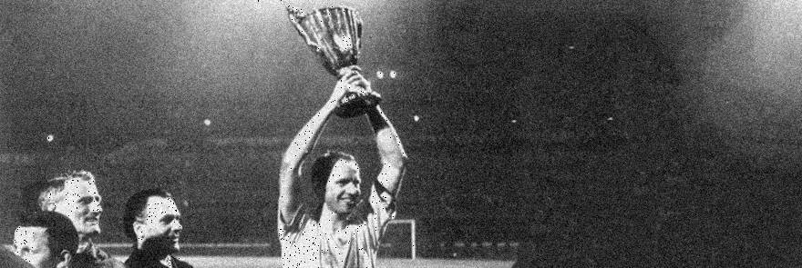

Quite extraordinary developments today in the matter of coach
Hermann Eppenhoff’s sacking in the aftermath of the game against
Inter Milan. Following an intervention by Eppenhoff’s lawyer, the
entire board resigned en masse declaring that all posts on the
board were up for election. The reason? A clear infringement of
protocol at the board elections of 27/1/1964. The theory being
that that infringement meant that president Kurt Schoienherr was
never really elected and so the sacking of Eppenhoff was not in
his thrall. The feted coach will take training again tomorrow. On
29/5/1964 an extraordinary general meeting will be held at the
great hall at Hoechst AG to hold new elections to the board. That
will bring to an end a drama the like of which German football has
never seen.
The apparent reason for Eppenhoff’s
sacking after the Inter game had been unflattering comments by the
coach towards members of the board. Eppenhoff is a much loved
figure in Dortmund, the team having won the championship under him
in 1963. Great victories in Europe against the likes of Lyn Oslo,
Benfica and Dukla Prague followed while the one-time Schalke man
has the total respect of the dressing room. That he had issues
with certain members of the board had been rumoured for some time
along the corridors of the club.
Borussia´s History
12/5/1964
Board sacks Eppenhoff / Eppenhoff sacks board
6/5/1966
Dortmund goes crazy: BVB beat Liverpool to win Cup Winners’ Cup

Hundreds of thousands thronged the streets of Dortmund this
evening to witness the homecoming at the ”Neuen Markt“ (today
known as Friedensplatz) of the victorious BVB team that beat
Liverpool 2-1 to secure the club’s first European title. Goal
scorers Held and Libuda were particularly feted but Tilkowski,
Cyliax, Redder, Kurrat, Paul, Assauer, Schmidt, Sturm and Emmerich
also received countless standing ovations from the manic crowd.
Town mayor Dietrich Keuning welcomed the team home and for BVB
president Steegman and coach Multhaup in turn thanked him for his
comments. The Black n Yellows had gone into the game in Glasgow’s
Hampden Park as big outsiders.
The theory was that the team from Beatles City would be too strong but BVB were simply too clever and also won most of the crucial one on ones. Assauer, Sturm, Paul and Tilkowski were outstanding in a team of heroes. BVB had reached the Final with wins over La Valetta, Sofia and Atletico Madrid. They had qualified for the competition by winning the German (DFB) Cup the previous season with a 2-0 win over Alemannia Aachen. For the first time ever a German president had been present at the final.
The theory was that the team from Beatles City would be too strong but BVB were simply too clever and also won most of the crucial one on ones. Assauer, Sturm, Paul and Tilkowski were outstanding in a team of heroes. BVB had reached the Final with wins over La Valetta, Sofia and Atletico Madrid. They had qualified for the competition by winning the German (DFB) Cup the previous season with a 2-0 win over Alemannia Aachen. For the first time ever a German president had been present at the final.
20/7/1966
'Emma' scores the ”Goal of the Century“
Borussia Dortmund’s top scorer Lothar ”Emma“ Emmerich certainly
focussed attention on himself by scoring a spectacular goal for
Germany in a World Cup game against Spain. In the 39th minute,
Emmerich charged onto a long ball from Overath down the left and
drilled an unstoppable shot high into the corner of keeper Inbar’s
net to make the score 1-1. The goal was instantly described by the
assembled media as the ”Goal of the Century“.
Uwe Seeler’s goal secured victory for the DFB eleven. It was Seeler who had begged coach Helmut Schoen to include Emmerich for the game. Emmerich was joined in the side by fellow BVB players Hans Tilkowski and Siggi Held.
Uwe Seeler’s goal secured victory for the DFB eleven. It was Seeler who had begged coach Helmut Schoen to include Emmerich for the game. Emmerich was joined in the side by fellow BVB players Hans Tilkowski and Siggi Held.
SEASON 1968/69
Dog bites Rausch – Nigbur’s appointment with the iceman
Games between BVB and Schalke 04 are always something special and
sometimes events around the games are just as interesting. One
such occasion came along in the 1968/69 meeting when a police dog
got free from his handler and promptly chased towards the backside
of Schalke’s Friedel Rausch. The dog had no muzzle on. There was a
bite, a cry of pain! Rausch happily only sustained a flesh wound
while a vet was called to confirm that the dog was none the worse
for the incident either. In the early 70s Norbert Nigbur was
between the sticks for Schalke. As his team went on the offensive
against BVB, Nigbur wandered forward to the edge of his box.
Seeing this, an ice-cream seller at the ”Rote Erde“ stadium crept
onto the field in front of the Schalke goal before striding out to
Nigbur to offer him an ice. It seemed to hit the spot!
SEASON 1968/69
A most entertaining ”Question Time“'
In the late 60s BVB enlisted the services of one Hermann Lindemann
as their coach, a man whose vanity was only exceeded by his poor
eyesight. This combination often led to his appearing on the
side-lines without his much-needed spectacles. Below is the
conversation that took place between Lindemann and one of his
players at the end of a game:
Lindemann: Tell me, in the 85th minute, how come you allowed your man to stroll into the box unchallenged and have a shot on goal? Player: Because it was a penalty.
Lindemann: Tell me, in the 85th minute, how come you allowed your man to stroll into the box unchallenged and have a shot on goal? Player: Because it was a penalty.